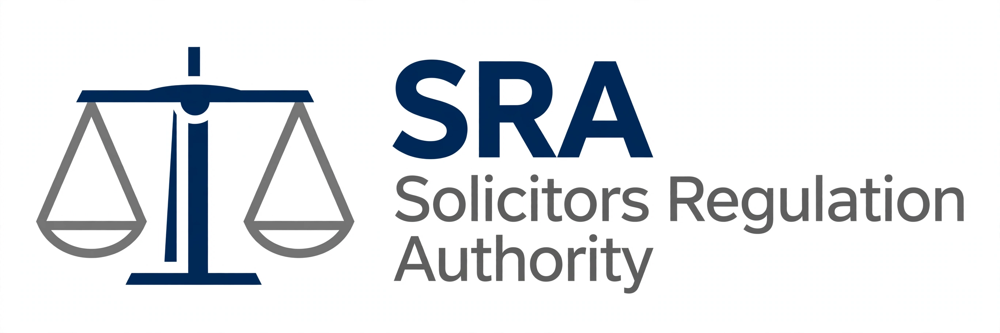

| Solicitors Regulation Authority | |
|---|---|
 | |
| Abbreviation | SRA |
| Formation | January 2007 |
| Type | Regulatory body |
| Purpose | Regulation of solicitors in England and Wales |
| Headquarters | The Cube, Birmingham, England |
| Region served | England and Wales |
| Parent organisation | Law Society of England and Wales |
The Solicitors Regulation Authority (SRA) is the regulatory body for solicitors in England and Wales. It is responsible for regulating the professional conduct of more than 200,000 solicitors and other authorised individuals, as well as the firms in which they work. The SRA operates as the regulatory arm of the Law Society of England and Wales, although it operates independently of it in discharging its regulatory functions.
The SRA sets the standards of behaviour and professional competence expected of solicitors, authorises individuals and firms to practise, monitors compliance, and takes enforcement action, including referring serious cases to the Solicitors Disciplinary Tribunal.
The SRA was established in January 2007. It succeeded the Law Society's previous regulatory arrangements, under which regulation had been carried out by bodies including the Office for the Supervision of Solicitors. The separation of regulation from the representative functions of the Law Society followed recommendations in the Clementi Review of legal services, and was placed on a statutory footing by the Legal Services Act 2007, which also created the Legal Services Board as oversight regulator for the legal professions in England and Wales.
The SRA's principal functions include:
The SRA has powers to impose fines, rebukes and conditions on practising certificates, and to intervene into a firm to protect clients' interests. More serious allegations of misconduct are prosecuted before the Solicitors Disciplinary Tribunal, which can strike a solicitor off the roll. In 2022 the SRA's power to fine firms and individuals for certain misconduct was increased substantially.